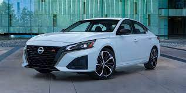
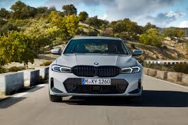
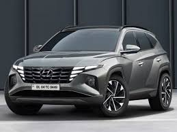
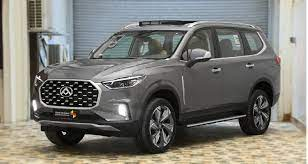
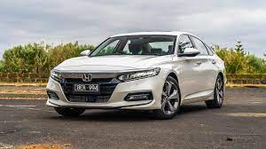
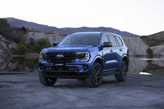
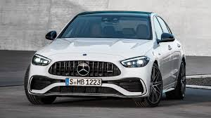
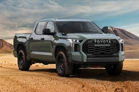
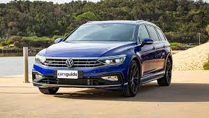

TOP CAR BRANDS IN THE YEAR 2023
The world top car companies or automobile manufacturers are indeed a component of one of the largest industries in the world if we simply look at the income they generate.
Here are top 10 car companies listed below:10. Nissan

Nissan was founded in the year 1933, headquatered in Yokohama, Japan.Over the
years nissan has become a renowned brand because of it's high reliability,
outstanding safety ratings and innovative designs. The automaker's reputation
for making solid, affordable cars is as strong as it is was during the early
days.
9. BMW
BMW was created in 1917 in Munich, Germany.BMW's are known for their high
performance engines and precise handling.The brand's vehicles are engineered
to deliver a dynamic driving experience with well balanced suspension systems
and high responsive steering.
Revenue: 86 billion$
8. Hyundai

Hyundai was established in the year 1967 in South Korea.Hyundai is known for
it's many warranties as well as it's complimentary maintenance programme.
Hyundai also has America's best warranty which supports their commitment to
provide vehicles of high quality,dependability and reliability.
Revenue: 96 billion$
7. Saic Motor

Saic motors was established in the year 1955 and headquatered in Shangai,China.Saic motors
ia a major car manufacturer in China and it has earned a good reputation among the german
automobile consumers thanks to it's high quality vehicle productions.
Revenue: 114 billion$
6. Honda

Honda was started in the year 1948 in Shiouka,Japan.Honda has a reputation for building durable cars.
Right across the honda line up you''ll find cars that are long lasting and fuel efficient.
Revenue: 129 billion$
5. General Motors

General motors was founded in the year 1908 and it is headquatered in Detroit,USA.Today general motors
is known for continuous quality,safety and innovation and also known for their 100 year old practice
of protection and evolving technology.
156 billion$
4. Ford Motors

The global American car manufacturer Ford Motor Corp was founded in Delaware in 1919.
It is a multinational American automaker with its headquarters in Dearborn, Michigan.
The business started out by acquiring the Ford Motor Company's operations, a Michigan
corporation founded in 1903 to produce and market automobiles that Henry Ford had created and constructed.
With roughly 200,000 employees worldwide, the corporation produces and services a broad range of cars, trucks,
EVs, etc.
Revenue: 156 billion$
3. Mercedes-Benz

Mercedes-Benz was founded 1926 and it is headquatered in Stuttgart,Germany.Mercedes-Benz are known for their
luxury,performance and build quality.The company offers a wide range of models at differnet price points.
Revenue: 190 billion$
2. Toyota

Toyota was established in the year 1937 in Aichi,Japan.Toyota is known for their excellent safety features
and luxurious interiors and their commitment to quality,every Toyota car is designed to meet the highest
standard of safety,performance and relaibility.
Revenue: 260 billion$
1. Volkswagen

Volkswagen was founded in the year 1937 and it is headquatered in Wolfsburg,Germany.Volkswagen is a brand
with an extraordinary position in the automotive market.The german manufacturer offers quality,comfort and
reliability.
Revenue: 284 billion$